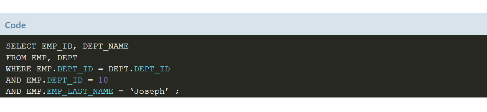
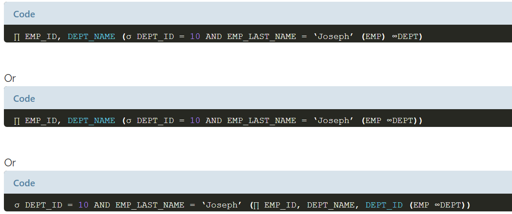
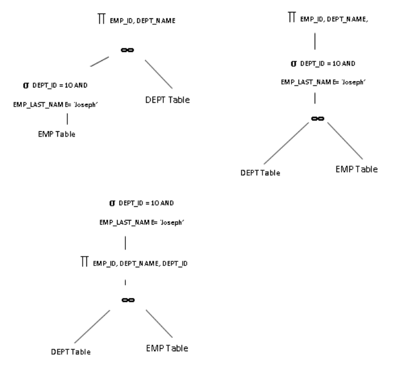

Ketika sebuah kueri dikirimkan ke DB, kueri tersebut akan diurai dan diterjemahkan ke aljabar relasional. Ini diverifikasi untuk validitas dan kebenarannya. Setelah melewati tahap ini, berbagai cara untuk mengevaluasi kueri dibuat. Kueri akan diperiksa untuk berbagai faktor dan rencana pelaksanaannya dibuat. Ini mungkin didasarkan pada biaya kueri atau berdasarkan aturan kesetaraan. Setelah eksekusi berbasis biaya dan rencana eksekusi berbasis aturan dibuat, pengoptimal harus memutuskan, rencana mana yang akan dipilih untuk evaluasi. Ini adalah langkah terpenting dalam memproses kueri.
Seperti yang telah kita tahu, biaya atau rencana eksekusi heuristik mungkin tidak selalu efektif di semua tabel dengan jenis kueri yang sama. Semuanya adalah pedoman umum untuk mengevaluasi kueri. Ada banyak faktor yang memengaruhi kinerja kueri.
Pertimbangkan contoh di bawah ini pada tabel EMP dan DEPT.

Kueri di atas memilih EMP_ID dan DEPT_NAME dari tabel EMP dan DEPT untuk DEPT_ID = 10 dengan nama belakang karyawan sebagai 'Joseph'. Tetapi ketika diberikan ke DBMS, itu membagi kueri menjadi token dan melihat bagaimana itu dapat disatukan sehingga kinerjanya akan lebih baik. Ini adalah tugas pengoptimal kueri. Namun mengubah urutan token dalam kueri seharusnya tidak mengubah hasilnya. Dengan cara apa pun itu harus memberikan hasil yang sama. Urutan catatan dapat berubah dan paling tidak penting. Ini disebut kueri yang setara. Ada seperangkat aturan untuk memasukkan token ke dalam kueri. Ini disebut aturan kesetaraan.
Kueri di atas dapat dipecah oleh DBMS dengan salah satu cara di bawah ini:
> Select records EMP dengan DEPT_ID = 10 dan EMP_LAST_NAME = ‘Joseph’ terlebih dahulu kemudian JOIN dengan tabel DEPT untuk mendapatkan semua records EMP dan DEPT yang cocok. Kemudian select hanya kolom EMP_ID dan DEPT_NAME untuk menampilkan hasilnya
> Select semua records yang cocok dari EMP dan DEPT, dimana filter pada DEPT_ID = 10 dan EMP_LAST_NAME = ‘Joseph’ dan kemudian select hanya EMP_ID dan DEPT_NAME yang akan ditampilkan.
> Select semua records yang cocok dari EMP dan DEPT, dimana hanya select EMP_ID dan DEPT_NAME dan kemudian filter pada DEPT_ID = 10 dan EMP_LAST_NAME = ‘Joseph’
Kedua langkah di atas sama terlepas dari bagaimana cara melakukannya. Karenanya keduanya disebut kueri ekivalen menggunakan aljabar relasional, atau pohon.


Pengoptimal dapat menghasilkan ekspresi dan pohon relasional dalam tiga format di atas. Menurut aturan evaluasi, kueri pertama tampaknya yang terbaik. Tetapi dengan mempertimbangkan faktor tabel lainnya, rencana lain mungkin juga efisien.